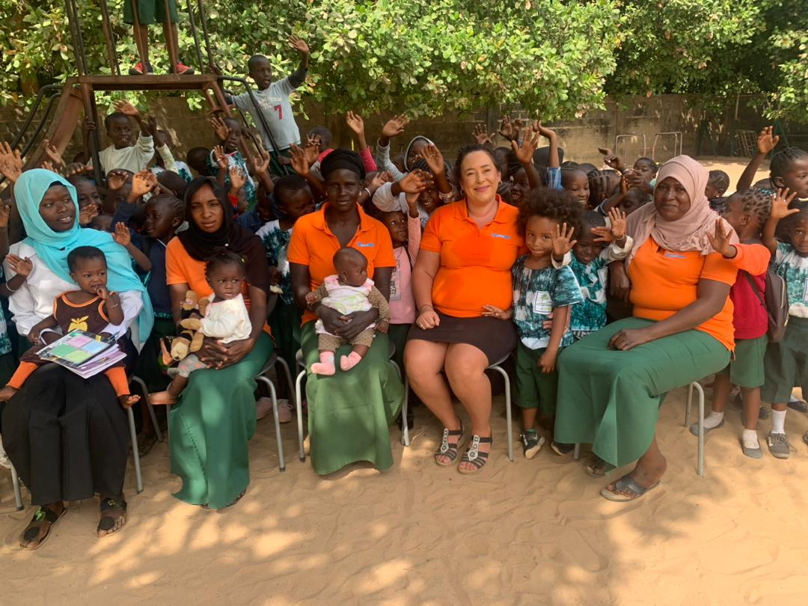
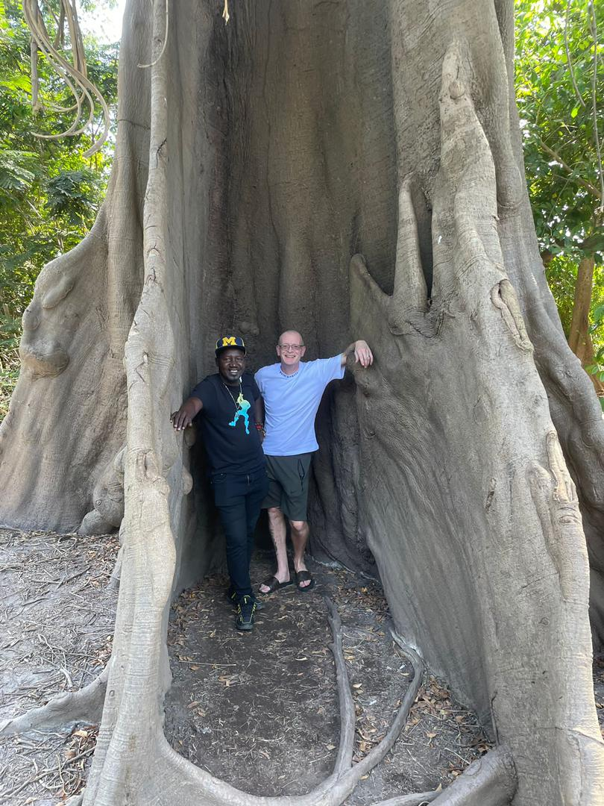
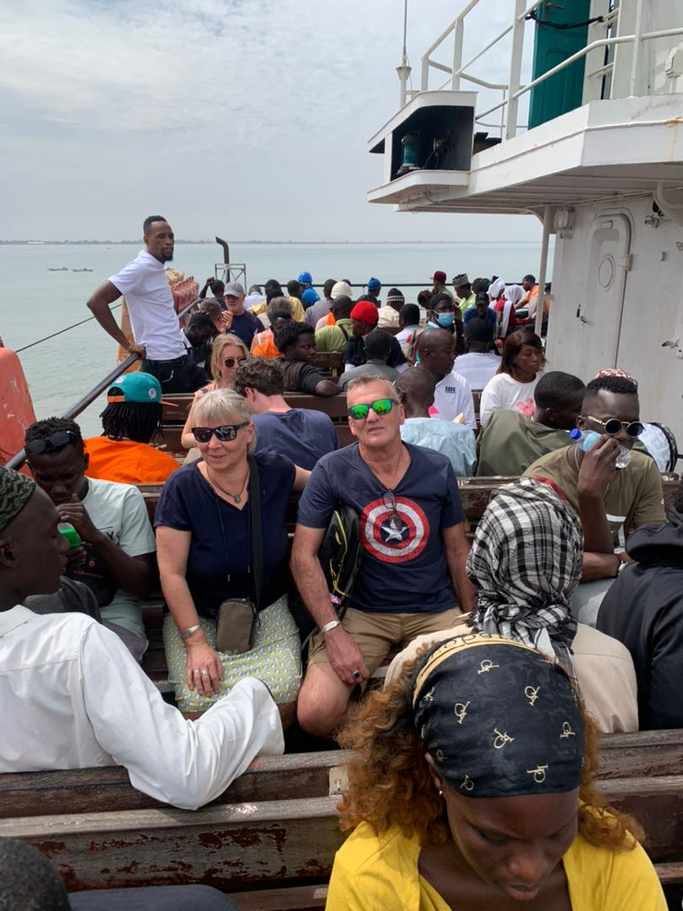
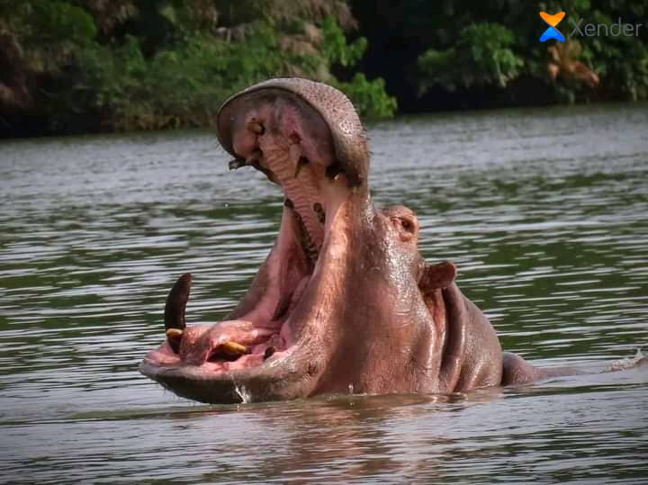

Obserwacja Ptaków w Gambii - Kompletny Przewodnik dla Polaków
Odkryj dlaczego Gambia to prawdziwy raj dla miłośników obserwacji ptaków. Ponad 560 gatunków, najlepsze miejsca i praktyczne wskazówki...
Czytaj więcejEksperckie przewodniki, lokalne wskazówki i wszystko czego potrzebujesz dla idealnych wakacji w Gambii
.jpeg)
Odkryj dlaczego Gambia to prawdziwy raj dla miłośników obserwacji ptaków. Ponad 560 gatunków, najlepsze miejsca i praktyczne wskazówki...
Czytaj więcej
Oficjalny sezon turystyczny rozpoczyna się 1 listopada 2025! Loty z Europy, idealna pogoda i nasze specjalne promocje dla wczesnych rezerwacji...
Czytaj więcej
Poznaj fascynującą kulturę Gambii: tradycje Mandinka, muzyka griot, lokalne zwyczaje i jak się zachować podczas wizyty w gambijskiej wiosce...
Czytaj więcejPrzewodniki po najlepszych miejscach do obserwacji ptaków w Gambii
3 artykułyPoznaj lokalną kulturę, zwyczaje i tradycje gambijskie
4 artykułyWszystko co musisz wiedzieć przed podróżą do Gambii
5 artykułówNajlepsze miejsca do obserwacji dzikich zwierząt
2 artykuły
Kiedy jechać do Gambii? Pogoda, sezon suchy i deszczowy, temperatury - wszystko co musisz wiedzieć...

Niezapomniany rejs po rzece Gambia z polskim przewodnikiem. Co zobaczysz i jak się przygotować...

Jak robić zakupy na targu Serekunda, co kupić, jak targować się i praktyczne wskazówki...